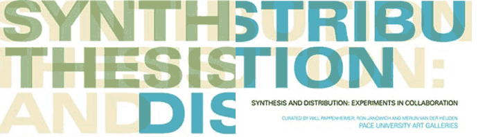
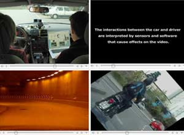
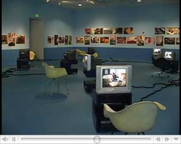
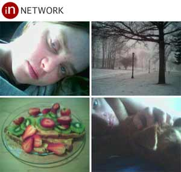
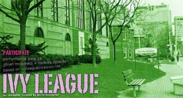

|
| |


Julie Andreyev • Four Wheel Drift

Lynn
Cazabon • Hasan Elahl

Michael Mandiberg • Julia Steinmetz

Jillian Mcdonald • Kelty
McKinnon • Beckley Roberts
more info on individual artists>>
November
15 - December 16
opening Tuesday Nov 15, 6-8pm
163 William Street
Pace
Digital Gallery is pleased to present new media work from:
Synthesis and Distribution: Experiments in Collaboration
Curated by:
Will Pappenheimer, Pace University
Ron Janowich, University of Florida
Merijn van der Heijden, Ohio State University
Notions
of synthesis and distribution in collaboration represent a coming together
of separate identities into a new and highly invigorating investigation.
As a pre-requisite, participants must question or set aside familiar rules
and tools to open up a particular problem in art and visual language from
different perspectives. The process is likely to encompass dialogue, brainstorming,
overlay, distribution, hybridization, and new forms of cooperative invention.
This way of working is not necessarily shaped by personal language or
personal concerns. It can be understood as a third language. It is a way
of working that is based on mutual respect and risk-taking that allows
a team or group to venture into new and unknown directions.
“Synthesis and Distribution: Experiments in Collaboration”
is an ongoing and changing series of exhibitions featuring the unexpected
results of artistic and interdisciplinary collaboration. The artists,
writers and thinkers were invited based on their willingness to explore
and transform each other’s work. They may have already established
an existing collaborative body of work or they may be encouraged to uncover
this latent interest within the purview of this exhibition. Above all,
this enterprise is motivated by the involvement and commitment of the
curators to support and exhibit the unique potential of the collaborative
process.
Artists from over five countries will exhibit work in photography, painting,
drawing, sculpture, new media, video, digital printing, and musical performance.
Interdisciplinary collaborations will include visual arts, musical performance,
criticism, writing, architecture and the social sciences. They will be
exhibited simultaneously in all three of Pace University’s Fine
Arts Galleries.
*
Artists exhibiting at Pace Digital Gallery, Nov. 15–Dec. 16th *
Julie Andreyev and Four Wheel Drift
Lynn Cazabon and Hasan Elahl
Michael Mandiberg and Julia Steinmetz
Jillian Mcdonald, Kelty McKinnon, and Beckley Roberts
John Miller and Takuji Kogo
Sal Randolph and Glowlab
Artists
exhibiting at other Pace Galleries:
Peter Fingestin Gallery and Pace Gallery, Pleasantville:
Robin
Hill and Stephen Kaltenbach
Las Hermanas Iglesias
Laura Lisbon and Suzanne Silver
Merijn van der Heijden and Ron Janowich
Mary Carlson and Jenne Silverthorn and Nica de la Torre
Mia Brownell and Martin Kruck
Barbara Ciurej and Lindsay Lochman
Will Pappenheimer & Gregory Ulmer
Aura Rosenberg, Jane Dickson, and "Who am I?" artists
Robin Tewes and Mark Tansey
Art Clay and Günter Heinz
Angie Drakoupolis and Daniel Hill
Lauren Garber and Tate Bunker and Neill Elliott
Charlie Ahearn and Colette
Kristin Lucas and FACT